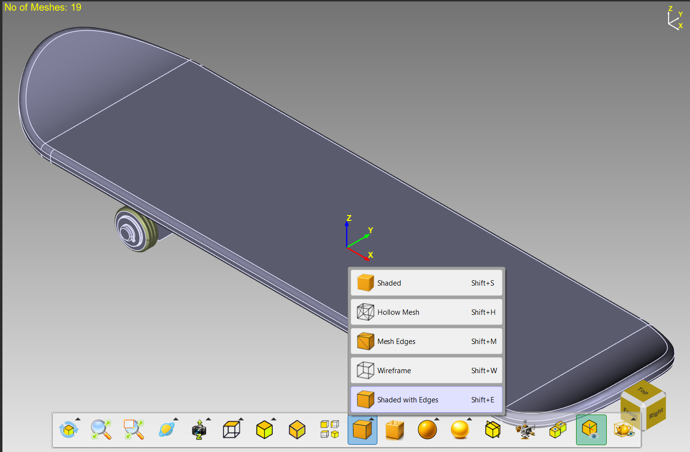
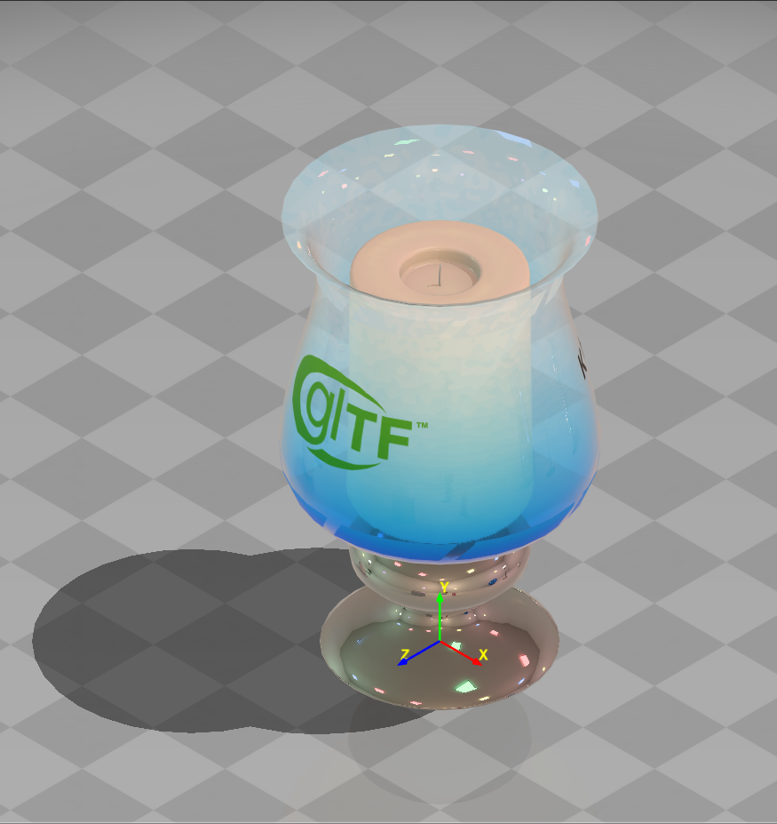
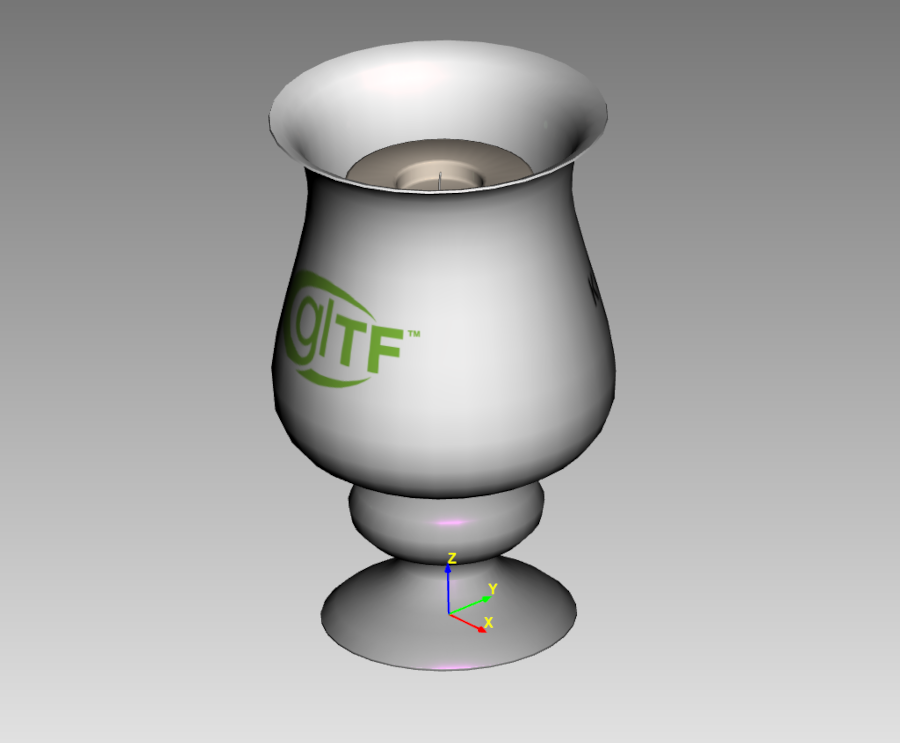
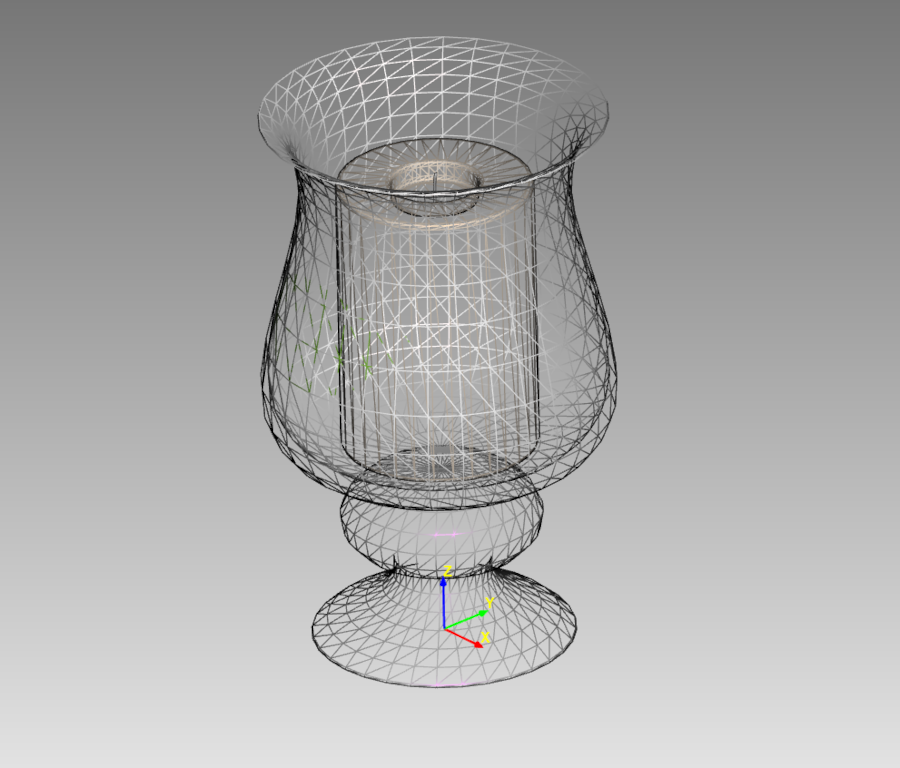
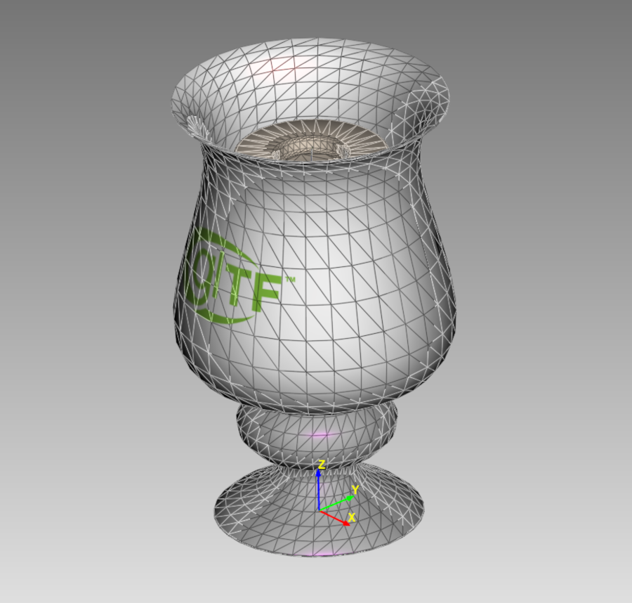
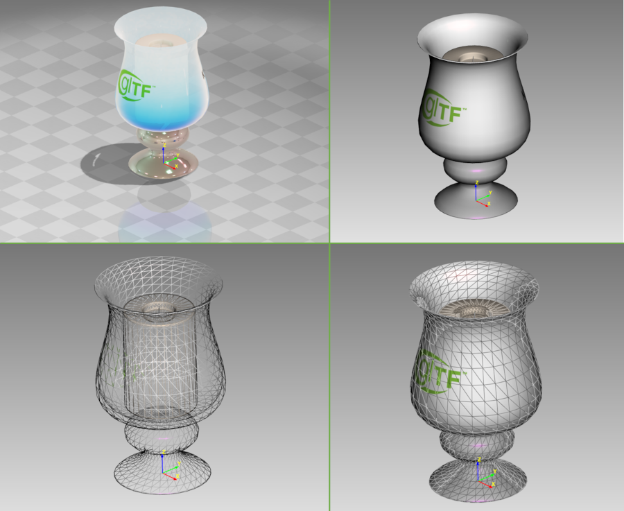

Lesson 7 of 18
Lesson 7: Display Modes
Accessing Display Modes
Step 1: Click Display Button
Find the 'Display Modes' button in the View Toolbar and choose your mode.

Display modes dropdown menu showing all four optionsRealistic Mode
The full-featured rendering mode including PBR materials, shadows, reflections, and HDR tone mapping.

Shaded Mode
Solid colored surfaces with basic ADS lighting. Ideal for modeling and checking geometry form.

Wireframe Mode
Shows only polygon edges. Excellent for inspecting topology and checking edge flow.

WireShaded Mode
Combines shaded surfaces with a wireframe overlay. Best for active modeling work.

Comparison

Comparison of Realistic, Shaded, Wireframe, and WireShaded modes